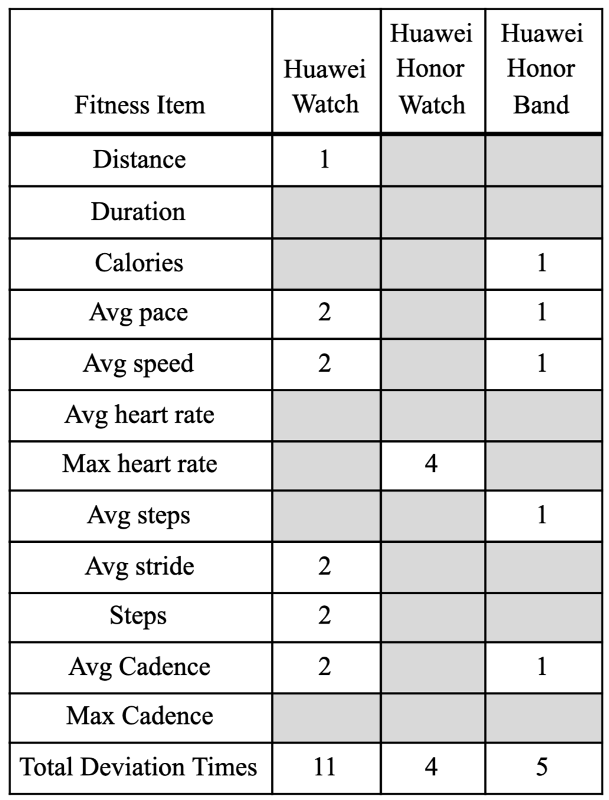

RESULTS
The findings gathered from data analysis can be categorised into four aspects: exercise motivations, recording habits, trust of accuracy and perception about fitness data.
Motivations of continuously doing exercises
To study the exercise habits of people who exercise regularly, we investigated the frequency and the types of exercises participants do. All the participants would do exercise at least once a week. The types of exercises are various based on personal preferences, which can be categorized in either aerobic or anaerobic exercises. Apart from one participant who was enthusiastic about outdoor exercises, all the other participants (85%) prefer indoor exercises. The initial triggers to do exercises are to keep either physically healthy or mentally healthy. After a long period of persistence on doing exercises, these groups of people have explored their own pleasure and enjoy the process. The motivations of keep doing exercises are strongly personally related. Their exercise routines still exist without a fitness tracker.
The wearable device is not the main factor that affects my exercise, it is just a system that assists my exercise. If I do not have a wearable device, I will still do sports. (P1)
The persistency of doing exercises can have a positive effect on users.
He [Men] doesn't do it for attracting females, he does it for himself. And sports can't do without you over the time... because it only shows effects when you keep doing it. It won’t work if you give up halfway. (P5)
One of the factors mentioned by participants is the emotional delightfulness brought by fitness.
... If I feel good after running 2 kilometers, I want to keep going. I used to have an experience about the records that I challenged myself yesterday. I set the same goal for 2 kilometers and I feel much better after a long time running. I received incentives for doing it consistently. (P2)
Because when you stop, you become fat again... to make me more confident, much happier. When you have better body shape, you will become happier. And doing sports will secrete dopamine, which will also make you happy. When you study all day, you can release pressure and relax from exercise. (P4)
Another factor is that the exercise habits have been integrated as a part of their daily life. Positive feedback on their bodies makes them continue doing exercises.
I have heard a saying that there is a DNA in people’s bodies that motivates you to do exercise. If you don’t do exercise, your body function will degrade. It won’t let you degrade because you need to use your body to hunt. (P6)
Because you can see your own effect. It is a long-term thing. If there is no feedback during this period, you will feel very disappointed and give it up. As it will give you a feedback of how much you did today for a group of data, so if I do not achieve it tomorrow, it doesn’t work. I want to do better. (P5)
Fitness Data Recording Habits
From the interviews, we find only half of fitness participants have an experience in using wearable devices. These participants used to check fitness data in a high frequency, either immediately after exercising, or do it whenever they have time. While they do not currently use wearable devices, it is because after users understand how their body and exercise data goes, only important fitness data needs to be recorded.
As time goes, the base changes little, and the weight does not change much, so the diet data becomes no longer important to be recorded, and the diet data no longer affects the weight data. (P3)
I can check it whenever on my phone, but I haven’t used these old ones recently. You can see this Huawei Health app on my phone, it records not only the exercises data, but also weight, heart rate and sleep information. (P7)
The other half participants have never used such wearable devices we provided in the cultural probe activity. These participants use either built-in functions or applications in mobile phones to record fitness data.
I use the built-in health app on my phone… it will record automatically in the normal time. It only records the simple data like step and distance. It doesn’t have calories and heart rate, not so much information. (P4)
I used to download an app which is named Keep, I used Keep to record during that month and went to the gym. Keep would record my weight every time I went to the gym… I saw the data from Keep after doing every exercise, you put in the time and types of exercise, it will calculate the calories you burnt. You fill in your own exercise style in this app, it can calculate how many calories you burnt. (P2)
I use my mobile phone to record data. I measure the daily weight data and record it in the notepad of the phone, and other data will not be recorded. Sometimes I also record my waist measurement data. (P3)
Some of them do not have the habits of recording it.
I don’t like to use devices to record data. When I feel tired, I will stop running. (P6)
Accuracy of Fitness Data
According to the quantitative data recorded by wearable devices from seven participants, there was not exactly the same data for all three devices under each fitness item. From the user's perspective, most participants believe the fitness data is accurate in a certain range.
I have participated in a 21km marathon before. I have worn it and saw its pace information. I think its data is quite accurate. (P1)
I think the data is accurate in general but may not be accurate to one step. (P5)
After the fitness data from the wearable devices were present to participants, the biased data were selected as they thought it was deviated from what they actually achieved. In terms of the tolerance range of each fitness item value, Table 2 has summarized the number of times fitness data deviated from the actual activities they conducted. Apart from the duration item, which was controlled manually by users, the other fitness items have deviated at least once. Comparing among three wearable devices, all the three trackers have deviations in different fitness items.

Table 2: Number of times fitness data deviated
For people who believe the data, they understood that as a device, it sometimes makes mistakes.
It is based on your exercise, even if you are not walking, it will be counted when you hold it and shake it. Sometimes it is more exaggerated. (P5)
One participant doesn’t believe the accuracy of the fitness data on wearable devices at all and chose to record data manually.
I think the calculated data is not accurate, so I do not use software to record the data. I think the app that records exercise data is not very accurate in calculating calories, and it is not proportional to my exercise volume. Maybe it is because I only do yoga, the consumption of the calories is inside the body, it does not affect the volume of exercise. It’s not as obvious as other anaerobic sports in the gym. (P3)
The reasons behind participants’ trust about fitness data varied. For those who trust the data, even if the data is not accurate to a digit, it is still worthy of reference
I think most people believe it. If they don’t believe it, they won’t check it or use it. (P5)
I do not very care about the data from the wearable device, the data is just a reference value. Unless I am a professional athlete, I will care about this data, I will consider the speed. (P1)
The price among different devices might also be a factor of the accuracy.
I find different devices various, but I think the expensive ones might be more accurate. (P7)
Perception about Trackers
There are three main aspects that affect users’ understanding of the accuracy of fitness data on trackers. Firstly, users want to know the basic principle of the calculation methods for each fitness item. It is not the algorithm behind it, but the simple reasonings of how it comes from body movements.
I want to see how it is calculated, the reasoning or basic principle behind the number. For example, it will present the calories burnt, I want it show how it is calculated below in a simple way, such as time multiplied by what...I don’t want to wear it. It makes me very uncomfortable. (P3)
This data is based on your weight, height and body fat rate to calculate how many calories you will burn after doing this exercise. The methodology should be clear. (P1)
I’m not sure if it includes the data when I take the bus and it moves slowly. I don’t know the mechanism of how it calculates the distance and step... the information present should let me understand how it works. It can express when they advertise it. (P4)
Secondly, information provided should be more realistic and easier to understand, especially for users who don’t have ideas about the fitness data.
I have no idea about the distance before. Now I know that one circle of the Great Court is very short. I used to think it should have 1 or 2 kilometers. I feel more real now. (P2)
I think it doesn't need to quantify the accurate data but can set some levels to distinguish them in a certain range, such as level 3 or level 5. (P6)
Thirdly, customization on the fitness data should be available so that users can focus on their own needs in exercises. One participant mentioned the rewards information, such as encouraging statements, were more important to convince her.
I believe the data analyzed by these apps is a kind of comfort. When I see these data, I can feel that I have really exercised. When I felt very tired after exercises, I chose to believe the number given by the devices…I want to see the random encouragement, even if it sounds very silly and lovely, such as “you’re great!” or some witty words. I won’t have the desire to share my achievement on social media with others every time, but I still need to get approval from others that I did this. (P2)